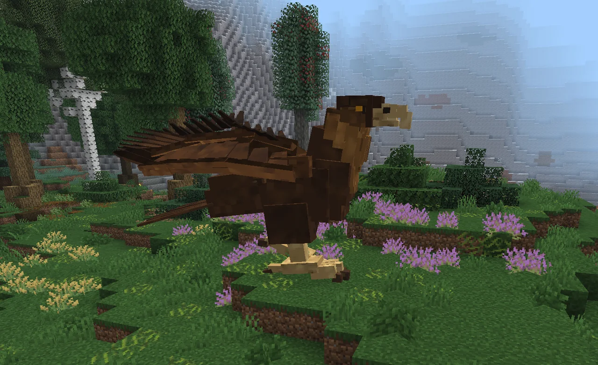
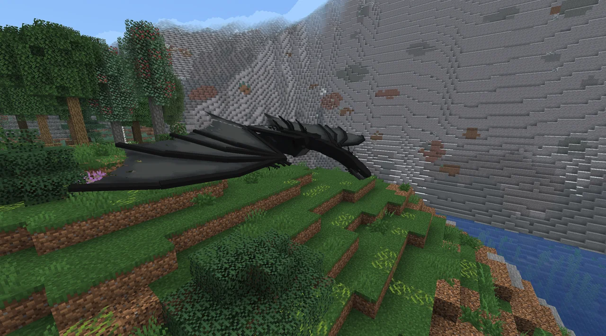

¶Mounti
iMounti jsou jezdecká zvířata a stvůry, na kterých létáš nebo jezdíš po Středozemi. Všechny najdeš v menu Mounti.
¶Velký orel a Fell Beast
¶Jak je získáš
- V Pet Truhle (otevírá se Pet klíčem) může padnout časová licence na Fell Beasta nebo Velkého orla (1 den, 7 dní nebo 30 dní).
- Časové licence se prodávají také ve webovém obchodě serveru.
- Odpočet času začne až prvním použitím. Nepoužitá licence nikdy nepropadne.
- Můžeš mít víc licencí, ale běžet smí jen jedna. Čas běží dál, i když je tvor schovaný.
![OVĚŘIT] Za kolik se licence prodávají, kde stojí Pet Truhla a zda se orel nebo Fell Beast dá získat i z eventu.


¶Vyvolání a schování
- Pravý klik licencí vyvolá tvora. Klikem licence na tvora ho schováš a klikem na zem ho znovu vyvoláš.
- Můžeš ho vyvolat i odvolat v menu Mounti.
- Mount funguje jen ve Středozemi. Před schováním z něj musíš slézt.
- Když jdeš spát, odvolej ho v menu.
¶Ovládání
Klávesy najdeš v Nastavení → Ovládání v kategorii Lotr Beasts. Výchozí jsou:
| Klávesa | Co dělá |
|---|---|
| R | útok (Fell Beast kousne, s orlem lze zaútočit na hráče) |
| F | žrání (sežere kořist před sebou) |
| G | orel: sednout a vstát (jen na zemi) |
| Shift + pravý klik na orla | orel zůstane na místě, nebo tě bude následovat |
¶Hlad a krmení
- Orel i Fell Beast jsou masožraví a mají hlad. Čím víc létají, tím rychleji jim hlad ubývá.
- Nakrmíš je tak, že přiletíš ke zvířeti (například krávě, ovci nebo slepici), sedneš na zem, přiblížíš se a stiskneš F.
- Pokud hlad klesne na minimum, tvor létá pomalu.
![OVĚŘIT] Přesné chování rychlosti při sprintu a při hladu, kterým zvířetem tvory krmit a klávesu pro sednutí orla (G, případně Shift + G).
¶Mounti Středozemě
K dispozici jsou čtyři trvalá zvířata: Vrk (warg), kozel (broadhoof), elk (great horn) a kůň.
- Nikdy nevyprší, ale máš jen jedno zvíře od každého druhu.
- Naráz může být vyvolaný jen jeden mount.
- Sedlo se nasadí samo. Brnění mountovi dáš tlačítkem Výbava.
- Když mount padne v boji, obnoví se až po nějaké době.
- Můžeš je získat z Pet Truhly (každý z nich s šancí kolem 11 %) a questy na mounty.
¶Questy na mounty
![OVĚŘIT] Questy na mounty se připravují a ještě nejsou ve hře ověřené. Berte je jako „připravuje se“.
Tam, kde budou NPC stát, najdeš dva tábory podle frakce. Každé NPC má jednoho mounta, kterého ti dá, když mu přineseš to, co chce. Mluví jen s hráči své strany.
- Elf dává elka, trpaslík kozla, člověk koně a skřet warga.
- Dobrá strana hlídá chyceného skřeta, zlá strana hlídá zajaté dobro.
- Každý quest splníš jen jednou. Kdo už mounta má, dostane odpověď, že ho má.
¶Další informace
- Fell Beast a Velký orel jsou časově omezené a hodí se na dlouhé cesty a bitvy.
- Trvalé mounty se hodí na každodenní jízdu. Víc o společnících najdeš v Kooperaci a Companions.
© Všechna práva vyhrazena tvůrcům módů, naším výtvorem je pouze zprostředkování serveru. Nejedná se o oficiální produkt Minecraftu. Nejsme spojeni s Mojang Studios.